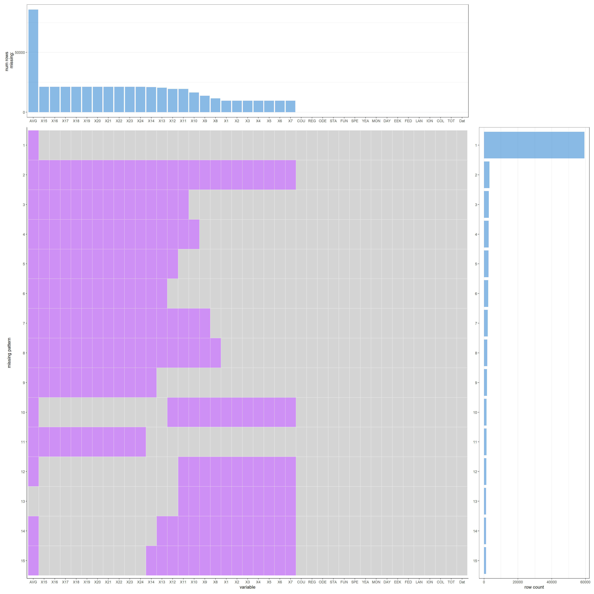
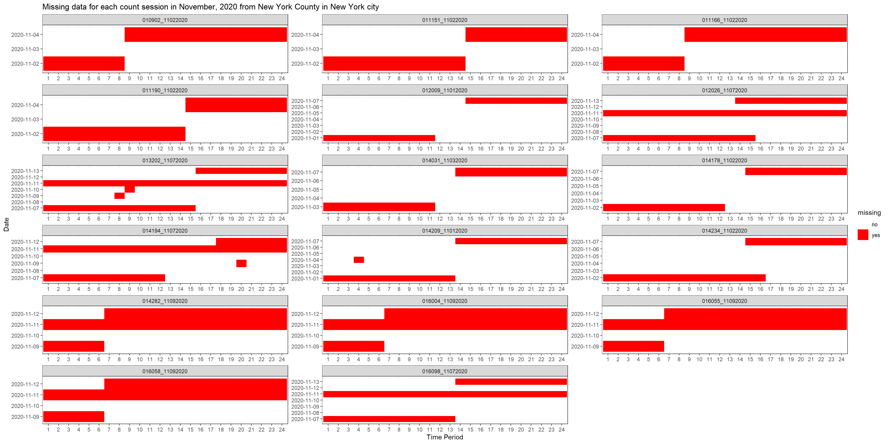

Chapter 5 Results
5.1 Overview for New York State
5.1.1 The overall trend of the average count per hour per street from 2018 to 2020
5.2 The busiest streets in New York State from 2018 to 2020
 From the plots above, we can see there are more busy streets from New York City(NYC) from 2018 to 2020, and it turns out that the 15 busiest streets are all from NYC on 2020. This suggest us that there may be something different between NYC and other counties, and we should take a closer look to NYC.
5.3 Closer Look at the New York City
